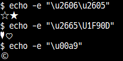

バック・ラップ (back wrap) 機能を有効にすると、BS 文字を受信した時に行の始めにあるカーソルが前の行の最後に移動します。バック・ラップを有効にするには、設定ファイルの [Tera Term] セクションの BackWrap 行を以下のように変更してください。
BackWrap=on
省略時: BackWrap=off
BEL 文字 (ASCII $07) が受信された時に Tera Term はビープ音を鳴らします。
ビープ音を鳴らしたくない場合は、設定ファイルの [Tera Term] セクションの Beep 行を以下のように変更してください。
Beep=off
また、以下のようにするとビープ音を鳴らす代わりに端末画面をフラッシュさせるようになります。
Beep=visual
省略時: Beep=on
Tera Term の漢字モード(受信)を EUC か JIS にして、 Teraminal ID を VT2XX または、 VT3XX にしている場合、Shift-JIS の漢字を受信すると、ハングアップすることがあります。
これは、Shift-JIS コードの中に C1 制御文字 ($80-$9F) が含まれているために、それらを制御文字として解釈してしまい、端末の状態がおかしくなるからです。
例えば、ホストによってはログイン時などに SJIS(Shift-JIS), EUC, JIS などの数種類の漢字コードを端末に送り、どのコードが正しく表示されてるかユーザーに入力させる、ということがあり、このような場合に問題が発生します。
もし、このような状態になった場合、[Control] Reset terminal で端末の状態をリセットしてください。
このような問題をさけるには、3つの方法があります。
Accept8BitCtrl=offのように編集し、 C1 制御文字として送られてきた文字を無視するように設定する。
省略時: Accept8BitCtrl=on
Tera TermではC1制御文字を送信する時、同等の意味を持つ7ビット文字の組み合わせを使います。
もし C1 制御文字を単独の8ビット文字で送信したい場合は、設定ファイルの [Tera Term] セクションの Send8BitCtrl 行を、
Send8BitCtrl=on
のように変更してください。
注: この設定は初期値としてのみ使われます。ホストは S7C1T / S8C1T / DECSCL 制御シーケンスによってこの設定を変更する事ができます。
省略時: Send8BitCtrl=off
一部のシステムで用いられている "kanji-out" シーケンス ^[(H は、JIS/ISO の規格に従っていません。本当に必要のある場合以外は使用しないでください。初期設定では間違いを防ぐため [Setup] terminal ダイアログボックスで ^[(H が選択できないようになっています。
^[(H を選択できるようにするには、設定ファイルの [Tera Term] セクションの AllowWrongSequence 行を、
AllowWrongSequence=on
のように変更してください。ダイアログボックスで選択できるようになります。
省略時: AllowWrongSequence=off
ホストから送られてくる2バイト文字(漢字等)の1バイト目と2バイト目の間に制御文字(例えば改行文字)等が入っても、Tera Term の初期設定では2バイト文字も制御文字も正しく取り扱われます。
設定ファイルの [Tera Term] セクションの CtrlInKanji 行を、
CtrlInKanji=off
のように変更すると、2バイト文字の1バイト目の後に制御文字等が来た場合、1バイト目を無効にします。この後に2バイト目が来ても、ゴミとして表示されます。2バイト文字を正しく扱わないアプリケーションでは、このようにしたほうが、画面の文字化けが少なくなる可能性があります。例えば、漢字の1バイト目の後に改行文字を出して、その後に2バイト目は出さない、というアプリケーションがあったとすると、その漢字は捨てられますが、改行文字以降に来る文字が化けずに済みます。
省略時: CtrlInKanji=on
受信した文字をすべて表示するようにするには、設定ファイルの [Tera Term] セクションの Debug 行を、
Debug=on
のように変更してください。Shift+Esc を押すとデバッグモードになります。 デバッグモードは全部で4種類あり、トグルで以下のように切り替わります。
デバッグモードを解除するには、「通常表示」に戻してください。
デバッグモードでは、受信したデータを以下の規則で文字に変換して表示します。
$00 - $1F ^@ - ^_を表示
($00=^@ $01=^A $02=^B $03=^C $04=^D $05=^E $06=^F $07=^G
$08=^H $09=^I $0A=^J $0B=^K $0C=^L $0D=^M $0E=^N $0F=^O
$10=^P $11=^Q $12=^R $13=^S $14=^T $15=^U $16=^V $17=^W
$18=^X $19=^Y $1A=^Z $1B=^[ $1C=^\ $1D=^] $1E=^^ $1F=^_)
$20 - $7E そのまま文字として表示
$7F <DEL>を表示
$80 - $FF 最上位 bit を0にして、$00-$7Fと同じ規則で
文字に変換し、反転文字として表示。
16進デバッグモードでは、受信したデータを以下の規則で文字に変換して表示します。
$00 - $FF 2桁の16進数値（アルファベットは大文字）と空白を表示する。
省略時: Debug=off
VT 端末のステータスラインの機能を使用不可にするには、設定ファイルの [Tera Term] セクションの EnableStatusLine 行を以下のように変更してください。
EnableStatusLine=off
この場合、ステータスラインに関するエスケープシーケンスはすべて無視されます。
省略時: EnableStatusLine=on
ホスト側のアプリケーションによって、TEK window が GIN モード(クロスヘアーカーソルが現れ、座標入力が可能な状態)になったとき、あるキーを押すと TEK window はクロスヘアーカーソルの座標とキーの ASCII コードをホストへ報告します。
GIN モードでマウスの左ボタンを押したときに座標とともに送出する キーコード を設定するには、設定ファイルの [Tera Term] セクションの TEKGINMouseCode 行を、
TEKGINMouseCode=<key code>
のように変更してください。
省略時: TEKGINMouseCode=32 (32はSpace のASCII コード)
on の場合には、行末のタブの動作は VT/PuTTY/xterm 等と同じになります。タブによる自動改行は発生しません。
off の場合には、行末のタブの動作は FreeBSD のコンソール (syscons) 等と同じになります。タブによる自動改行が発生します(VT非互換)。
VTCompatTab=on
省略時: VTCompatTab=off
カーソルが左上(0, 0)にある場合の <ESC>[J (Erase Below) は、<ESC>[2J (Erase All) と同じことになる。
このとき、画面クリア時にカレントバッファをスクロールアウトするかどうかを設定できる。
on の場合には、<ESC>[2J と同様にカレントバッファをスクロールアウトする。
off の場合にはカレントバッファをスクロールアウトせず、カーソル位置からスクリーンの最後までを消去する。
省略時: ScrollWindowClearScreen=on
ここでは設定の内容について説明します。
次のページも参照ください。
マップされる文字は幾つかの種類に分類されており、種類毎に変換するか設定する事が出来ます。
変換する種類ごとの値を足した数値をUnicodeToDecSpMappingに指定してください。
種類A: 罫線 値: 1 Box drawings (U+2500-U+257F)
種類B: 4.58までは??と表示された文字(英語環境では何も表示されない物も含む) 値: 2 Bullet (U+2022) Hyphenation point (U+2027) Light shade (25%) (U+2591) Medium shade (50%) (U+2592) Dark shade (75%) (U+2593) Black small square (U+25AA) Black vertical rectangle (U+25AE) Black very small square (U+2B1D)
種類C: 日本語環境では中点、英語環境ではMiddle dotとして表示される文字
日本語環境以外では指定しない事を勧めます
値: 4
Middle dot (U+00B7)
One dot leader (U+2024)
Bullet operator (U+2219)
省略時: # 種類AとB UnicodeToDecSpMapping=3
Tera Term 4.62 より、ファンクションキーやエディタキーパッドのキーのデフォルトの動作が変更になりました。 これにより、キーボード設定ファイルでこれらのキー設定をoffにしたり、キーボード設定ファイルが無い場合も、VT端末の同じようなキーのシーケンスが送出されるようになりました。
キーボード設定ファイルでファンクションキー等をoffにした時に、以前のバージョンの Tera Term と同じように何も送出しないようにするには、設定ファイルの [Tera Term] セクションの StrictKeyMapping 行を以下のように変更してください。
StrictKeyMapping=on
省略時: StrictKeyMapping=off
AltキーでMSB(Most Significant Bit 最上位ビット)をセットした文字を送信するには、設定ファイルの [Tera Term] セクションの Meta8Bit 行を以下のようにしてください。
Meta8Bit=raw
また、AltキーでMSB(Most Significant Bit 最上位ビット)をセットした文字を、送信文字コードの設定に従って(UTF-8等に)変換してから送信するには、以下のようにしてください。
Meta8Bit=text
注: どちらの場合も、この機能を有効にするには Meta Key の設定も有効にしておく必要があります。
省略時: Meta8Bit=off
Tera Term 4.65より代替画面バッファに対応しました。この為、代替画面バッファに対応したアプリケーション(Vimやlessなど)では終了時に起動前の画面が復元されます。
代替画面バッファを無効にするには、設定ファイルの [Tera Term] セクションの AlternateScreenBuffer 行を以下のようにしてください。
AlternateScreenBuffer=off
省略時: AlternateScreenBuffer=on
Tera Term は DA3 制御シーケンスを受信すると、端末固有の ID 応答します。端末固有 ID は 8 桁の 16 進数値で、最初の 2 桁が製造場所を、残りの 6 桁が製造場所内で端末毎に割り振られた固有の番号です。
DA3 制御シーケンスに対して応答する端末固有 ID を別の値、例えば 01234567 に変更したい場合は、設定ファイルの [Tera Term] セクションの TerminalUID 行を以下のようにしてください。
TerminalUID=01234567
省略時: TerminalUID=FFFFFFFF
端末固有 ID はホスト側から DECSTUI 制御シーケンスを送る事によって変更する事が出来ますが、標準ではこの機能は無効にされています。
DECSTUI制御シーケンスによって端末固有 ID を変更できるようにしたい場合は、設定ファイルの [Tera Term] セクションの LockTUID 行を以下のようにしてください。
LockTUID=off
省略時: LockTUID=on
制御シーケンスによるタブストップの位置の変更を禁止したい場合は、設定ファイルの [Tera Term] セクションの TabStopModifySequence 行を以下のようにしてください。
TabStopModifySequence=off
また、タブストップの位置を変更する制御シーケンスの内、特定のもののみを禁止する事も出来ます。以下のタブストップ変更シーケンスの内、許可するシーケンスの略号の組み合わせを指定します。
| 略号 | シーケンス | 説明 |
|---|---|---|
| HTS7 | ESC H | カーソル位置にタブストップを設定する (7ビット形式) |
| HTS8 | 0x88 | カーソル位置にタブストップを設定する (8ビット形式) |
| HTS | - | HTS7とHTS8の両方 |
| TBC0 | ESC [ 0 g | カーソル位置のタブストップを削除する |
| TBC3 | ESC [ 3 g | すべてのタブストップを削除する |
| TBC | - | TBC0とTBC3の両方 |
例えば、8ビット形式のタブ設定シーケンス(HTS8)のみを禁止したい場合は、設定ファイルの [Tera Term] セクションの TabStopModifySequence 行を以下のようにしてください。
TabStopModifySequence=HTS7,TBC
省略時: TabStopModifySequence=on
ホスト側から BEL 文字 (ASCII $07) が送られて来た時、Tera Term ではビープ音を鳴らしたり、画面を点滅させたりします。
誤ってバイナリファイルを表示してしまった時などで多量に BEL 文字が送られて来た時に、自動的にビープ音を鳴らすのを抑制する事が出来ます。
例えば、設定ファイルの [Tera Term] セクションの BeepOverUsedTime, BeepOverUsedCount, BeepSuppressTime 行を以下のようにすると、
2 秒間に 5 回 BEL 文字が送られてくると、BEL 文字が 10 秒間送られて来なくなるまでビープ音をならさないようになります。
; Beep over-used BeepOverUsedTime=2 BeepOverUsedCount=5 BeepSuppressTime=10
省略時: ; Beep over-used BeepOverUsedTime=2 BeepOverUsedCount=5 BeepSuppressTime=5
ホスト側から BEL 文字 (ASCII $07) が送られて来た時、Tera Term では画面を点滅させることができます。
画面の点滅は、端末を反転表示したのち一定時間待ち、再び端末を反転表示して元に戻しています。
ユーザはこの待ち時間を調節することができます。
; Wait time (ms) when Beep is Visual Bell BeepVBellWait=100
省略時: BeepVBellWait=10
Tera Term では OSC 文字列の処理時に処理用のバッファが足りなくなると自動的にバッファを拡張するようになっています。 しかし、バグ等でホスト側が壊れた OSC 文字列送ってきた時などに際限なくメモリを消費するのを防ぐため、 OSC 文字列処理用のバッファの最大サイズを制限しています。
通常の使用ではまず問題が発生しませんが、OSC 52 (PASTE64) で多量のデータをやり取りする場合に制限にかかり、
データが途中で切れてしまう場合があります。
設定ファイルの [Tera Term] セクションの MaxOSCBufferSize 行の値を以下のように増やす事によって、OSC 文字列でより多量のデータを扱えるようになります。
MaxOSCBufferSize=16000
省略時: MaxOSCBufferSize=4096
ISO/IEC 2022のシフト機能による文字セットの切り替えを禁止したい場合は、設定ファイルの [Tera Term] セクションの ISO2022ShiftFunction 行を以下のようにしてください。
ISO2022ShiftFunction=off
また、ISO/IEC 2022のシフト機能の内、特定のもののみを禁止する事も出来ます。以下のシフト機能の内、許可する機能の略号の組み合わせを指定します。
| 略号 | コード | 説明 |
|---|---|---|
| SI | 0x0F | GL へ G0 を呼び出す |
| SO | 0x0E | GL へ G1 を呼び出す |
| LS2 | ESC n | GL へ G2 を呼び出す |
| LS3 | ESC o | GL へ G3 を呼び出す |
| LS1R | ESC ~ | GR へ G1 を呼び出す |
| LS2R | ESC } | GR へ G2 を呼び出す |
| LS3R | ESC | | GR へ G3 を呼び出す |
| SS2 | 0x8E / ESC N | GL または GR へ G2 を次の一文字に限り呼び出す |
| SS3 | 0x8F / ESC O | GL または GR へ G3 を次の一文字に限り呼び出す |
| ALL | - | 上記すべて |
| NONE | - | なし |
例えば、Shift-In(SI), Shift-Out(SO) のみを禁止したい場合は、設定ファイルの [Tera Term] セクションの ISO2022ShiftFunction 行を以下のようにしてください。
ISO2022ShiftFunction=LS2,LS3,LS1R,LS2R,LS3R,SS2,SS3
また、略号の前に - を付ける事によって指定したシフト機能を無効にする事ができます。前述の Shift-In(SI), Shift-Out(SO) のみを禁止する設定は、以下のようにも指定できます。
ISO2022ShiftFunction=ALL,-SI,-SO
注: この形式で指定した場合、設定の保存を行うと使用する機能のみのリストに置き換えられます。
省略時: ISO2022ShiftFunction=on
次の設定の時
例えば、以下を実行すると ﾃﾗﾀｰﾑ と表示されます。
echo -e '\016CW@0Q\017' # => ﾃﾗﾀｰﾑ
しかし、G1に他の文字セットが指示された状態になるとSOでJIS X 0201 カタ カナが表示されなくなってしまいます。
# G1にUS-ASCIIを指示する echo -e '\033)B' # SOでGLにG1を呼び出してもJIS X 0201 カタカナが表示できない echo -e '\016CW@0Q\017' # => CW@0Q
FixedJIS=on に設定するとSOでGLにG1を呼び出す時に、あらかじめG1にJIS X 0201 カタカナを指示するようになり、いつもJIS X 0201カタカナが表示され るようになります。
FixedJIS=on はG1をJIS X 0201 カタカナに固定する為の設定です。これによ り、常に7bit JISカタカナ端末として使えるようになります。
省略時: FixedJIS=off
受信文字がUTF-8のときに、UTF-8として不正な文字を、CP932としてデコードします。実験的実装です。
Cygwin接続時にWindows付属コマンドの出力がCP932で行われる事に対応するためのもので、それ以外のケースは想定していません。
省略時: FallbackToCP932=off
Unicode(UTF-8)を使用時、文字ごとに描画幅を設定することができます。
コードポイントと文字幅(セル数)を指定します。
複数の文字幅設定を定義することができます。
文字幅設定の定義はINIファイルを編集することで行います。
文字ごとの文字幅オーバーライド設定を使うで、
この設定を使用する/しない、文字幅設定の選択ができます。
文字幅設定を複数定義することができます。
詳細[UnicodeOverrideCharWidth] List1=CellWidth1 List2=CellWidth2 List3=jis0208.ini, CellWidth Selected=1 Enable=on
; TERATERM.INI [CellWidth1] Name=sample1 Range1=U+2605,U+2606,2 Range2=U+00a9,2 Range3=U+1F363,0 Range4=U+2665,1 Range5=U+1F90D,2

設定例2
emacs を CJK 環境にする。
Tera Term の Ambiguous 文字の文字幅を 2 Cell に設定する。
UnicodeEmojiOverride 設定を off にする。Ambiguous 文字は Tera Term で設定した幅が、それ以外は East_Asian_Width プロパティの幅が使用される。
ここまでの設定で Ambiguous 文字はすべて 2 Cell で描画されるが、emacs では width=1 が想定されている Ambiguous 文字もある。
これらの文字幅を個別に 1 に設定する。
; TERATERM.INI [CellWidth2] Name=sample 2 Range1=U+0000AE,1 Range2=U+0000FC,1

Unicode 17 の Ambiguous 文字すべてを emacs 29 の文字幅に合わせるには以下のようにする。
; TERATERM.INI [UnicodeOverrideCharWidth] List1=CellWidth3 Selected=1 Enable=on [CellWidth3] ; AlmaLinux OS 10 ; emacs-nw-29.4-12.el10.x86_64 ; (set-language-environment "Japanese") Name=emacs 29 CJK Range1=U+0000A1,1 ; INVERTED EXCLAMATION MARK Range2=U+0000A4,1 ; CURRENCY SIGN Range3=U+0000A7,2 ; SECTION SIGN Range4=U+0000A8,2 ; DIAERESIS Range5=U+0000AA,1 ; FEMININE ORDINAL INDICATOR Range6=U+0000AD,1 ; SOFT HYPHEN Range7=U+0000AE,1 ; REGISTERED SIGN Range8=U+0000B0,2 ; DEGREE SIGN Range9=U+0000B1,2 ; PLUS-MINUS SIGN Range10=U+0000B2,U+0000B3,1 ; SUPERSCRIPT TWO..SUPERSCRIPT THREE Range11=U+0000B4,2 ; ACUTE ACCENT Range12=U+0000B6,2 ; PILCROW SIGN..MIDDLE DOT Range13=U+0000B7,1 Range14=U+0000B8,1 ; CEDILLA Range15=U+0000B9,1 ; SUPERSCRIPT ONE Range16=U+0000BA,1 ; MASCULINE ORDINAL INDICATOR Range17=U+0000BC,U+0000BE,1 ; VULGAR FRACTION ONE QUARTER..VULGAR FRACTION THREE QUARTERS Range18=U+0000BF,1 ; INVERTED QUESTION MARK Range19=U+0000C6,1 ; LATIN CAPITAL LETTER AE Range20=U+0000D0,1 ; LATIN CAPITAL LETTER ETH Range21=U+0000D7,2 ; MULTIPLICATION SIGN Range22=U+0000D8,1 ; LATIN CAPITAL LETTER O WITH STROKE Range23=U+0000DE,U+0000E1,1 ; LATIN CAPITAL LETTER THORN..LATIN SMALL LETTER A WITH ACUTE Range24=U+0000E6,1 ; LATIN SMALL LETTER AE Range25=U+0000E8,U+0000EA,1 ; LATIN SMALL LETTER E WITH GRAVE..LATIN SMALL LETTER E WITH CIRCUMFLEX Range26=U+0000EC,U+0000ED,1 ; LATIN SMALL LETTER I WITH GRAVE..LATIN SMALL LETTER I WITH ACUTE Range27=U+0000F0,1 ; LATIN SMALL LETTER ETH Range28=U+0000F2,U+0000F3,1 ; LATIN SMALL LETTER O WITH GRAVE..LATIN SMALL LETTER O WITH ACUTE Range29=U+0000F7,2 ; DIVISION SIGN Range30=U+0000F8,U+0000FA,1 ; LATIN SMALL LETTER O WITH STROKE..LATIN SMALL LETTER U WITH ACUTE Range31=U+0000FC,1 ; LATIN SMALL LETTER U WITH DIAERESIS Range32=U+0000FE,1 ; LATIN SMALL LETTER THORN Range33=U+000101,1 ; LATIN SMALL LETTER A WITH MACRON Range34=U+000111,1 ; LATIN SMALL LETTER D WITH STROKE Range35=U+000113,1 ; LATIN SMALL LETTER E WITH MACRON Range36=U+00011B,1 ; LATIN SMALL LETTER E WITH CARON Range37=U+000126,U+000127,1 ; LATIN CAPITAL LETTER H WITH STROKE..LATIN SMALL LETTER H WITH STROKE Range38=U+00012B,1 ; LATIN SMALL LETTER I WITH MACRON Range39=U+000131,U+000133,1 ; LATIN SMALL LETTER DOTLESS I..LATIN SMALL LIGATURE IJ Range40=U+000138,1 ; LATIN SMALL LETTER KRA Range41=U+00013F,U+000142,1 ; LATIN CAPITAL LETTER L WITH MIDDLE DOT..LATIN SMALL LETTER L WITH STROKE Range42=U+000144,1 ; LATIN SMALL LETTER N WITH ACUTE Range43=U+000148,U+00014B,1 ; LATIN SMALL LETTER N WITH CARON..LATIN SMALL LETTER ENG Range44=U+00014D,1 ; LATIN SMALL LETTER O WITH MACRON Range45=U+000152,U+000153,1 ; LATIN CAPITAL LIGATURE OE..LATIN SMALL LIGATURE OE Range46=U+000166,U+000167,1 ; LATIN CAPITAL LETTER T WITH STROKE..LATIN SMALL LETTER T WITH STROKE Range47=U+00016B,1 ; LATIN SMALL LETTER U WITH MACRON Range48=U+0001CE,1 ; LATIN SMALL LETTER A WITH CARON Range49=U+0001D0,1 ; LATIN SMALL LETTER I WITH CARON Range50=U+0001D2,1 ; LATIN SMALL LETTER O WITH CARON Range51=U+0001D4,1 ; LATIN SMALL LETTER U WITH CARON Range52=U+0001D6,1 ; LATIN SMALL LETTER U WITH DIAERESIS AND MACRON Range53=U+0001D8,1 ; LATIN SMALL LETTER U WITH DIAERESIS AND ACUTE Range54=U+0001DA,1 ; LATIN SMALL LETTER U WITH DIAERESIS AND CARON Range55=U+0001DC,1 ; LATIN SMALL LETTER U WITH DIAERESIS AND GRAVE Range56=U+000251,1 ; LATIN SMALL LETTER ALPHA Range57=U+000261,1 ; LATIN SMALL LETTER SCRIPT G Range58=U+0002C4,1 ; MODIFIER LETTER UP ARROWHEAD Range59=U+0002C7,1 ; CARON Range60=U+0002C9,U+0002CB,1 ; MODIFIER LETTER MACRON..MODIFIER LETTER GRAVE ACCENT Range61=U+0002CD,1 ; MODIFIER LETTER LOW MACRON Range62=U+0002D0,1 ; MODIFIER LETTER TRIANGULAR COLON Range63=U+0002D8,U+0002DB,1 ; BREVE..OGONEK Range64=U+0002DD,1 ; DOUBLE ACUTE ACCENT Range65=U+0002DF,1 ; MODIFIER LETTER CROSS ACCENT Range66=U+000300,U+00036F,1 ; COMBINING GRAVE ACCENT..COMBINING LATIN SMALL LETTER X Range67=U+000391,U+0003A1,2 ; GREEK CAPITAL LETTER ALPHA..GREEK CAPITAL LETTER RHO Range68=U+0003A3,U+0003A9,2 ; GREEK CAPITAL LETTER SIGMA..GREEK CAPITAL LETTER OMEGA Range69=U+0003B1,U+0003C1,2 ; GREEK SMALL LETTER ALPHA..GREEK SMALL LETTER RHO Range70=U+0003C3,U+0003C9,2 ; GREEK SMALL LETTER SIGMA..GREEK SMALL LETTER OMEGA Range71=U+000401,2 ; CYRILLIC CAPITAL LETTER IO Range72=U+000410,U+00044F,2 ; CYRILLIC CAPITAL LETTER A..CYRILLIC SMALL LETTER YA Range73=U+000451,2 ; CYRILLIC SMALL LETTER IO Range74=U+002010,2 ; HYPHEN Range75=U+002013,1 ; EN DASH Range76=U+002014,U+002015,2 ; ..HORIZONTAL BAR Range77=U+002016,2 ; DOUBLE VERTICAL LINE Range78=U+002018,2 ; LEFT SINGLE QUOTATION MARK Range79=U+002019,2 ; RIGHT SINGLE QUOTATION MARK Range80=U+00201C,2 ; LEFT DOUBLE QUOTATION MARK Range81=U+00201D,2 ; RIGHT DOUBLE QUOTATION MARK Range82=U+002020,U+002021,2 ; DAGGER..BULLET Range83=U+002022,1 Range84=U+002024,1 ; ONE DOT LEADER..HYPHENATION POINT Range85=U+002025,U+002026,2 Range86=U+002027,1 Range87=U+002030,2 ; PER MILLE SIGN Range88=U+002032,U+002033,2 ; PRIME..DOUBLE PRIME Range89=U+002035,1 ; REVERSED PRIME Range90=U+00203B,2 ; REFERENCE MARK Range91=U+00203E,1 ; OVERLINE Range92=U+002074,1 ; SUPERSCRIPT FOUR Range93=U+00207F,1 ; SUPERSCRIPT LATIN SMALL LETTER N Range94=U+002081,U+002084,1 ; SUBSCRIPT ONE..SUBSCRIPT FOUR Range95=U+0020AC,1 ; EURO SIGN Range96=U+002103,2 ; DEGREE CELSIUS Range97=U+002105,1 ; CARE OF Range98=U+002109,1 ; DEGREE FAHRENHEIT Range99=U+002113,1 ; SCRIPT SMALL L Range100=U+002116,2 ; NUMERO SIGN Range101=U+002121,2 ; TELEPHONE SIGN..TRADE MARK SIGN Range102=U+002122,1 Range103=U+002126,1 ; OHM SIGN Range104=U+00212B,2 ; ANGSTROM SIGN Range105=U+002153,U+002154,1 ; VULGAR FRACTION ONE THIRD..VULGAR FRACTION TWO THIRDS Range106=U+00215B,U+00215E,1 ; VULGAR FRACTION ONE EIGHTH..VULGAR FRACTION SEVEN EIGHTHS Range107=U+002160,U+002169,2 ; ROMAN NUMERAL ONE..ROMAN NUMERAL TWELVE Range108=U+00216A,U+00216B,1 Range109=U+002170,U+002179,1 ; SMALL ROMAN NUMERAL ONE..SMALL ROMAN NUMERAL TEN Range110=U+002189,1 ; VULGAR FRACTION ZERO THIRDS Range111=U+002190,U+002193,2 ; LEFTWARDS ARROW..LEFT RIGHT ARROW Range112=U+002194,1 Range113=U+002195,U+002199,1 ; UP DOWN ARROW..SOUTH WEST ARROW Range114=U+0021B8,U+0021B9,1 ; NORTH WEST ARROW TO LONG BAR..LEFTWARDS ARROW TO BAR OVER RIGHTWARDS ARROW TO BAR Range115=U+0021D2,2 ; RIGHTWARDS DOUBLE ARROW Range116=U+0021D4,2 ; LEFT RIGHT DOUBLE ARROW Range117=U+0021E7,1 ; UPWARDS WHITE ARROW Range118=U+002200,2 ; FOR ALL Range119=U+002202,U+002203,2 ; PARTIAL DIFFERENTIAL..THERE EXISTS Range120=U+002207,U+002208,2 ; NABLA..ELEMENT OF Range121=U+00220B,2 ; CONTAINS AS MEMBER Range122=U+00220F,1 ; N-ARY PRODUCT Range123=U+002211,2 ; N-ARY SUMMATION Range124=U+002215,1 ; DIVISION SLASH Range125=U+00221A,2 ; SQUARE ROOT Range126=U+00221D,U+002220,2 ; PROPORTIONAL TO..ANGLE Range127=U+002223,1 ; DIVIDES Range128=U+002225,2 ; PARALLEL TO Range129=U+002227,U+00222C,2 ; LOGICAL AND..DOUBLE INTEGRAL Range130=U+00222E,U+002234,2 ; THEREFORE..PROPORTION Range131=U+002235,U+002236,1 Range132=U+00223C,1 ; TILDE OPERATOR..REVERSED TILDE Range133=U+00223D,2 Range134=U+002248,1 ; ALMOST EQUAL TO Range135=U+00224C,1 ; ALL EQUAL TO Range136=U+002252,2 ; APPROXIMATELY EQUAL TO OR THE IMAGE OF Range137=U+002260,U+002261,2 ; NOT EQUAL TO..IDENTICAL TO Range138=U+002264,U+002265,1 ; LESS-THAN OR EQUAL TO..GREATER-THAN OVER EQUAL TO Range139=U+002266,U+002267,2 Range140=U+00226A,U+00226B,2 ; MUCH LESS-THAN..MUCH GREATER-THAN Range141=U+00226E,U+00226F,1 ; NOT LESS-THAN..NOT GREATER-THAN Range142=U+002282,U+002283,2 ; SUBSET OF..SUPERSET OF Range143=U+002286,U+002287,2 ; SUBSET OF OR EQUAL TO..SUPERSET OF OR EQUAL TO Range144=U+002295,1 ; CIRCLED PLUS Range145=U+002299,1 ; CIRCLED DOT OPERATOR Range146=U+0022A5,2 ; UP TACK Range147=U+0022BF,2 ; RIGHT TRIANGLE Range148=U+002312,2 ; ARC Range149=U+002460,U+002473,2 ; CIRCLED DIGIT ONE..NUMBER TWENTY FULL STOP Range150=U+002474,U+00249B,1 Range151=U+00249C,U+0024E9,1 ; PARENTHESIZED LATIN SMALL LETTER A..CIRCLED LATIN SMALL LETTER Z Range152=U+0024EB,U+0024FF,1 ; NEGATIVE CIRCLED NUMBER ELEVEN..NEGATIVE CIRCLED DIGIT ZERO Range153=U+002500,U+002503,2 ; BOX DRAWINGS LIGHT HORIZONTAL..BOX DRAWINGS HEAVY VERTICAL AND HORIZONTAL Range154=U+002504,U+00250B,1 Range155=U+00250C,2 Range156=U+00250D,U+00250E,1 Range157=U+00250F,U+002510,2 Range158=U+002511,U+002512,1 Range159=U+002513,U+002514,2 Range160=U+002515,U+002516,1 Range161=U+002517,U+002518,2 Range162=U+002519,U+00251A,1 Range163=U+00251B,U+00251D,2 Range164=U+00251E,U+00251F,1 Range165=U+002520,2 Range166=U+002521,U+002522,1 Range167=U+002523,U+002525,2 Range168=U+002526,U+002527,1 Range169=U+002528,2 Range170=U+002529,U+00252A,1 Range171=U+00252B,U+00252C,2 Range172=U+00252D,U+00252E,1 Range173=U+00252F,U+002530,2 Range174=U+002531,U+002532,1 Range175=U+002533,U+002534,2 Range176=U+002535,U+002536,1 Range177=U+002537,U+002538,2 Range178=U+002539,U+00253A,1 Range179=U+00253B,U+00253C,2 Range180=U+00253D,U+00253E,1 Range181=U+00253F,2 Range182=U+002540,U+002541,1 Range183=U+002542,2 Range184=U+002543,U+00254A,1 Range185=U+00254B,2 Range186=U+002550,U+002573,1 ; BOX DRAWINGS DOUBLE HORIZONTAL..BOX DRAWINGS LIGHT DIAGONAL CROSS Range187=U+002580,U+00258F,1 ; UPPER HALF BLOCK..LEFT ONE EIGHTH BLOCK Range188=U+002592,U+002595,1 ; MEDIUM SHADE..RIGHT ONE EIGHTH BLOCK Range189=U+0025A0,U+0025A1,2 ; BLACK SQUARE..WHITE SQUARE Range190=U+0025A3,U+0025A9,1 ; WHITE SQUARE CONTAINING BLACK SMALL SQUARE..SQUARE WITH DIAGONAL CROSSHATCH FILL Range191=U+0025B2,U+0025B3,2 ; BLACK UP-POINTING TRIANGLE..WHITE UP-POINTING TRIANGLE Range192=U+0025B6,1 ; BLACK RIGHT-POINTING TRIANGLE Range193=U+0025B7,1 ; WHITE RIGHT-POINTING TRIANGLE Range194=U+0025BC,U+0025BD,2 ; BLACK DOWN-POINTING TRIANGLE..WHITE DOWN-POINTING TRIANGLE Range195=U+0025C0,1 ; BLACK LEFT-POINTING TRIANGLE Range196=U+0025C1,1 ; WHITE LEFT-POINTING TRIANGLE Range197=U+0025C6,U+0025C7,2 ; BLACK DIAMOND..WHITE DIAMOND CONTAINING BLACK SMALL DIAMOND Range198=U+0025C8,,1 Range199=U+0025CE,U+0025CF,2 ; BULLSEYE..CIRCLE WITH RIGHT HALF BLACK Range200=U+0025D0,U+0025D1,1 Range201=U+0025E2,U+0025E5,1 ; BLACK LOWER RIGHT TRIANGLE..BLACK UPPER RIGHT TRIANGLE Range202=U+0025EF,2 ; LARGE CIRCLE Range203=U+002605,U+002606,2 ; BLACK STAR..WHITE STAR Range204=U+002609,1 ; SUN Range205=U+00260E,U+00260F,1 ; BLACK TELEPHONE..WHITE TELEPHONE Range206=U+00261C,1 ; WHITE LEFT POINTING INDEX Range207=U+00261E,1 ; WHITE RIGHT POINTING INDEX Range208=U+002640,2 ; FEMALE SIGN Range209=U+002642,2 ; MALE SIGN Range210=U+002660,U+002661,1 ; BLACK SPADE SUIT..WHITE HEART SUIT Range211=U+002663,U+002665,1 ; BLACK CLUB SUIT..BLACK HEART SUIT Range212=U+002667,U+002669,1 ; WHITE CLUB SUIT..EIGHTH NOTE Range213=U+00266A,2 Range214=U+00266C,1 ; BEAMED SIXTEENTH NOTES..MUSIC FLAT SIGN Range215=U+00266D,2 Range216=U+00266F,2 ; MUSIC SHARP SIGN Range217=U+00269E,U+00269F,1 ; THREE LINES CONVERGING RIGHT..THREE LINES CONVERGING LEFT Range218=U+0026BF,1 ; SQUARED KEY Range219=U+0026C6,U+0026CD,1 ; RAIN..DISABLED CAR Range220=U+0026CF,U+0026D3,1 ; PICK..CHAINS Range221=U+0026D5,U+0026E1,1 ; ALTERNATE ONE-WAY LEFT WAY TRAFFIC..RESTRICTED LEFT ENTRY-2 Range222=U+0026E3,1 ; HEAVY CIRCLE WITH STROKE AND TWO DOTS ABOVE Range223=U+0026E8,U+0026E9,1 ; BLACK CROSS ON SHIELD..SHINTO SHRINE Range224=U+0026EB,U+0026F1,1 ; CASTLE..UMBRELLA ON GROUND Range225=U+0026F4,1 ; FERRY Range226=U+0026F6,U+0026F9,1 ; SQUARE FOUR CORNERS..PERSON WITH BALL Range227=U+0026FB,U+0026FC,1 ; JAPANESE BANK SYMBOL..HEADSTONE GRAVEYARD SYMBOL Range228=U+0026FE,U+0026FF,1 ; CUP ON BLACK SQUARE..WHITE FLAG WITH HORIZONTAL MIDDLE BLACK STRIPE Range229=U+00273D,1 ; HEAVY TEARDROP-SPOKED ASTERISK Range230=U+002776,U+00277F,1 ; DINGBAT NEGATIVE CIRCLED DIGIT ONE..DINGBAT NEGATIVE CIRCLED NUMBER TEN Range231=U+002B56,U+002B59,1 ; HEAVY OVAL WITH OVAL INSIDE..HEAVY CIRCLED SALTIRE Range232=U+003248,U+00324F,1 ; CIRCLED NUMBER TEN ON BLACK SQUARE..CIRCLED NUMBER EIGHTY ON BLACK SQUARE Range233=U+00FFFD,1 ; REPLACEMENT CHARACTER Range234=U+01F100,U+01F10A,1 ; DIGIT ZERO FULL STOP..DIGIT NINE COMMA Range235=U+01F110,U+01F12D,1 ; PARENTHESIZED LATIN CAPITAL LETTER A..CIRCLED CD Range236=U+01F130,U+01F169,1 ; SQUARED LATIN CAPITAL LETTER A..NEGATIVE CIRCLED LATIN CAPITAL LETTER Z Range237=U+01F170,U+01F18D,1 ; NEGATIVE SQUARED LATIN CAPITAL LETTER A..NEGATIVE SQUARED SA Range238=U+01F18F,U+01F190,1 ; NEGATIVE SQUARED WC..SQUARE DJ Range239=U+01F19B,U+01F1AC,1 ; SQUARED THREE D..SQUARED VOD